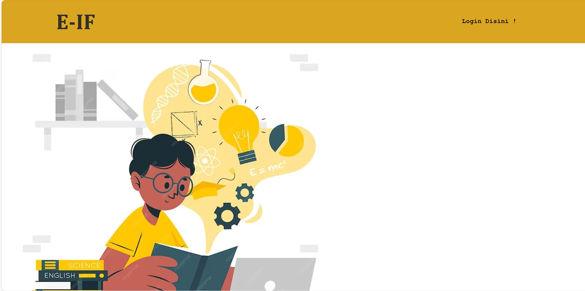
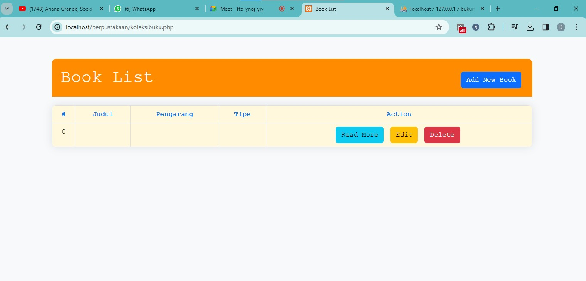

Website Perpustakaan


Website Perpustakaan yang kami buat merupakan solusi digital yang memanfaatkan PHP dan MySQL untuk menyediakan sistem manajemen perpustakaan yang efisien dan terintegrasi. Kami memberikan fungsionalitas yang dinamis dan interaktif bagi pengguna, sementara MySQL digunakan sebagai basis data yang handal untuk menyimpan dan mengelola informasi buku, anggota, dan transaksi perpustakaan. Operasi CRUD yang kami terapkan memungkinkan pengguna untuk dengan mudah menambahkan, mengedit, dan menghapus informasi buku serta melacak riwayat peminjaman dengan cepat dan efisien.